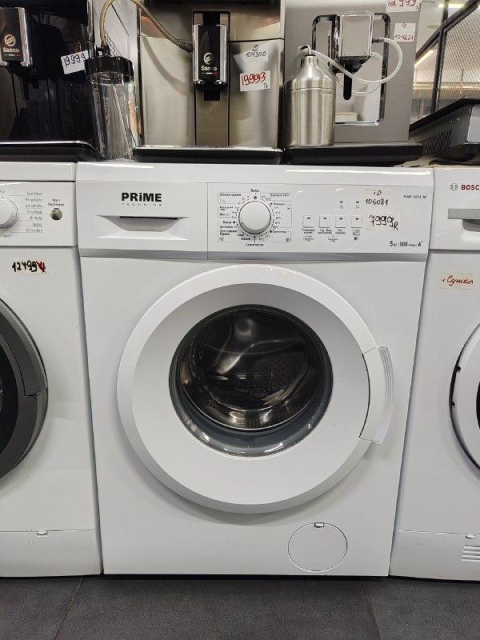
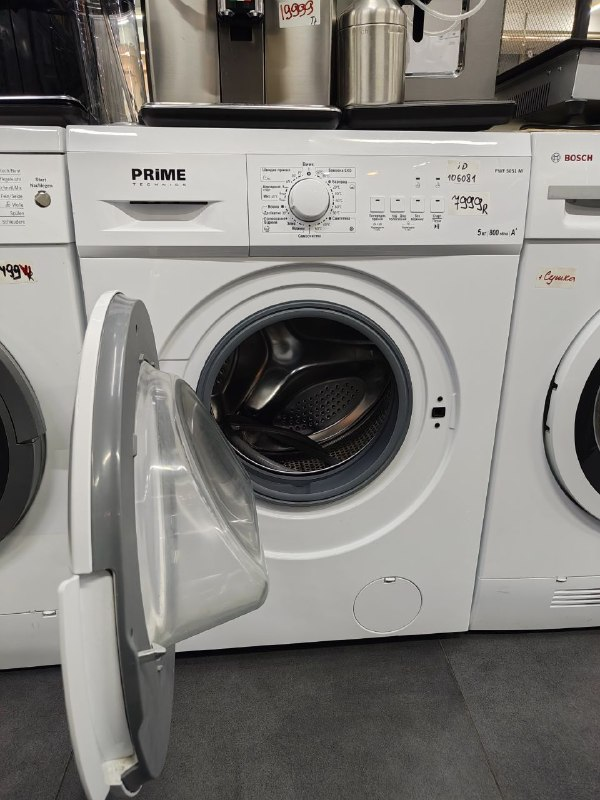
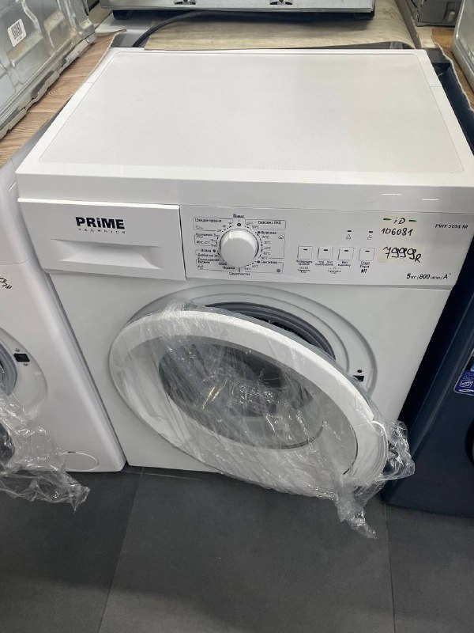
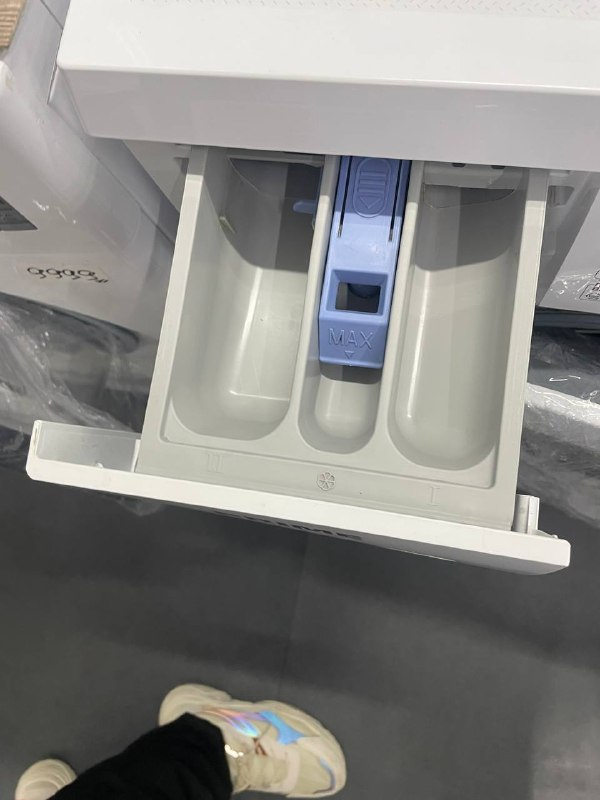
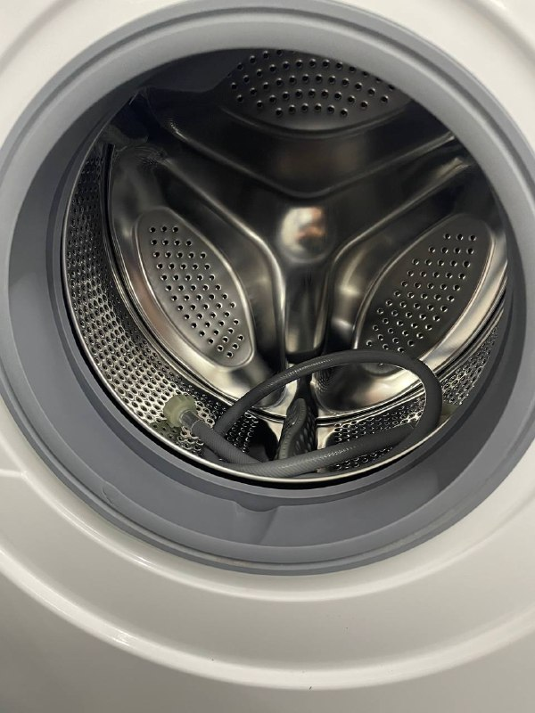
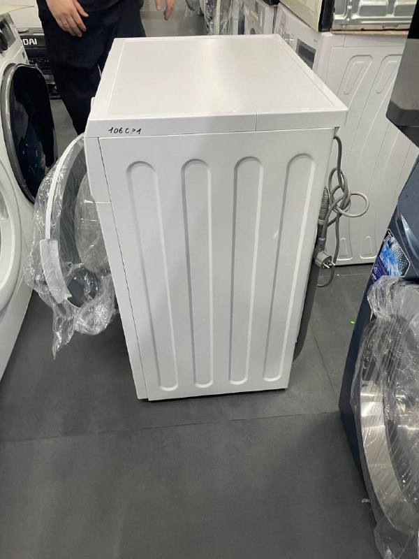
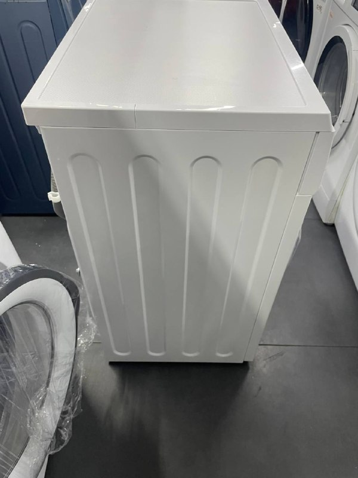

Стиральная машина Prime PWF5051M
7 999 грн
ID 106081 · Б/у · В наличии · Гарантия 3 месяца
ID106081
Цена 7999 грн
Prime PWF5051M
5 кг загрузка
800 оборотов
Высота 85 см
Ширина 60 см
Глубина 46 см
Гарантия 3 месяца
Ул. Вадима Гетьмана, 1